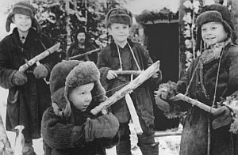

Дру́га світова́ війна́
Дру́га світова́ війна́ — глобальний збройний конфлікт, що тривав упродовж з 1 вересня 1939 по 2 вересня 1945 року. У війні взяло участь понад 60 країн, зокрема всі великі держави, які утворили два протилежні військові табори: блок країн Осі та антигітлерівську коаліцію («союзники»). Безпосередню участь у бойових діях брали понад 100 мільйонів осіб. Супротивні держави кинули всі свої економічні, промислові та наукові можливості на вимоги фронту, стираючи різницю між цивільними та військовими ресурсами. Загальні людські втрати оцінюються від 50 до 80 мільйонів осіб, більшість із яких були мешканцями Радянського Союзу та Китаю. Друга світова війна відзначилася численними масовими вбивствами і злочинами проти людяності, насамперед Голокостом, стратегічними килимовими бомбардуваннями та єдиним в історії військовим застосуванням ядерної зброї.
Основними причинами війни стали політичні суперечності, породжені недосконалою Версальською системою та агресивна експансіоністська політика нацистської Німеччини, Японської імперії та Італії. 1 вересня 1939 року гітлерівські війська вторглися в Польщу. 3 вересня Велика Британія та Франція оголосили Німеччині війну. Упродовж 1939-41 років завдяки серії успішних військових кампаній та низки дипломатичних заходів нацисти спромоглись захопити більшу частину континентальної Європи. У той же час Радянський Союз анексував території сусідніх європейських держав: Польщі, Румунії, Фінляндії та країн Балтії, що відійшли до його сфери впливу на підставі Пакту Молотова-Ріббентропа. Після початку бойових дій в Північній Африці та падіння Франції в середині 1940 року війна продовжилась, насамперед, між країнами Осі та Великою Британією, ВПС якої зуміли відбити німецькі повітряні атаки. У цей же час бойові дії поширились на Балканський півострів та Атлантичний океан. Японія окупувала частину Китаю та Південно-Східної Азії, взявши під контроль важливі джерела сировини.
22 червня 1941 року війська країн Осі чисельністю 3.5 мільйонів чоловік вторглися в Радянський Союз, маючи на меті завоювання «життєвого простору» у Східній Європі. Відкривши найбільший в історії сухопутний фронт, німецькі війська спершу доволі швидко окупували західні регіони СРСР, однак в битві за Москву зазнали поразки. В цей же час Японія віроломно напала на США та підкорила західну частину Тихого океану. Аби протистояти нацистській загрозі, було створено Антигітлерівську коаліцію 26 країн, в окупованих державах розгорнувся рух опору. У лютому 1943 радянська армія здобула перемогу під Сталінградом. У Північній Африці німецькі та італійські війська зазнали поразки під Ель-Аламейном. Просування Японії було зупинено силами американців та австралійців у битві за Мідвей.

Дру́га світова́ війна́
У 1943 році після низки військових невдач Гітлера на Східному фронті, висадки союзників в Сицилії та Італії, що призвело до її капітуляції, і перемог США на Тихому океані, країни Осі втратили ініціативу та перейшли до стратегічного відступу на всіх фронтах. У 1944 році армії західних альянтів визволили Західну та Центральну Європу, у той час як радянські війська вигнали нацистів з власної території та стали просуватись у сторону Німеччини.
Ця дата вважається Днем перемоги над нацизмом в Європі. У серпні 1945 Радянський Союз розгорнув бойові дії проти Японії. Після опублікування 26 липня 1945 Постдамської декларації та відмови Японії капітулювати на її умовах США скинули атомні бомби на міста Хіросіму і Нагасакі 6 і 9 серпня відповідно. Неминуче вторгнення американців на японський архіпелаг, а також можливість інших атомних бомбардувань змусили керівництво даної острівної країни здатися. Акт про капітуляцію Японії було підписано 2 вересня 1945 року на борту лінкора «Міссурі». Таким чином, війна в Азії закінчилась, закріпивши загальну перемогу антигітлерівської коаліції.
.jpg)
Причини
Питання про причини Другої світової війни залишається в історичній науці досить дискусійним і неоднозначним. Більшість дослідників виділяють такі основні причини: Версальсько-Вашингтонська система, що встановила несправедливі, на думку деяких держав, кордони (серед іншого — недостатнє врахування етнічного принципу) та систему економічних і політичних взаємин; фашистські та мілітаристські держави, а також ті, що програли війну, на чолі з Третім Рейхом, Королівством Італія та Японською імперією були невдоволені Версальською системою і прагнули до нового перерозподілу світу, до захоплення колоній, джерел сировини і ринків збуту, які тоді знаходилися переважно під контролем Великої Британії, Французької Республіки, США і СРСР; пропаганда СРСР «світової революції» та практична діяльність у напрямку її підготовки (прийняття «Програми світової революції», спроби експорту революції); неефективність Ліги націй; загострення суперечностей між великими державами через глибоку економічну кризу; політика потурання агресорам, яку проводили Велика Британія, Французька Республіка та СРСР[1] сподіваючись вгамувати їхні апетити.
мирний договір значно обмежив можливості Німецької держави у військовій сфері. У квітні-травні 1922 року у місті Рапалло, що на півночі Королівства Італія відбулася Генуезька конференція. Основною темою конференції була спільна відмова від висунення вимог щодо компенсації за шкоду, завдану протягом бойових дій у Першій світовій війні. Одним із результатів конференції стало підписання 16 квітня 1922 року Рапалльського договору між РРФСР і Німецькою державою. Угода передбачала негайне відновлення у повному обсязі дипломатичних зв'язків між РРФСР і Німецькою державою. Для Радянської Росії це був перший в її історії міжнародний договір. Для Німецької держави, що до того у міжнародній політиці перебувала поза законом, ця угода мала принципове значення, оскільки тим самим Німеччина розпочала своє повернення до визнаних світовою спільнотою держав